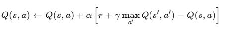

My understanding of training a RL agent for Flappy Bird
Hey I’m writing this down for futur me and potential collaborator to better understand RL and all of it’s aspect.
The first project that I would like to write on is Training Flappy bird.
I’ve been doing implementation of Q-learning and SARSA for some of the environnement available in gymnasium like Frozen-lake, Cart Pole, mountain cart, taxi and cliff walking. And since I could always throw Q-learning at them I needed a bigger challenge. This is why I became interested in Deep Q-learning, the evolution of my Q-learning. Going over the theory is not easy there’s still some thing that I have a hard time grasping and that’s why trying to implement said algo helped better understand. I started following along Johny Code implementation to test it for myself.
What is Q-learning?
Q-Learning is a off-policy model-free algorithm.
Off-policy means that we are learning from the data generated by a different policy than the one being learned. The difference between a on-policy and off-policy is that on-policy uses the actual next action to update Q(table) compared to off-policy which uses the best possible action even if you didn’t take it. A real world analogy could be:
Off-policy:
You don’t need to crash a car to learn to be a better driver. You can learn from watching others taking the optimal actions you should take
On-policy:
You only learn from the action you take while driving, even if its a mistake like crashing a car
Model-free means that algorithm does not try to predict ‘what the next state will be’, ‘what reward it will get’, ‘probabilities of transitions’. Instead it learns only from trial-and-error experience. A simple analogy could be that:
Model-free:
Does not need to know of the world works. It just tries actions and learn from the results
Model-based:
Tries to understand how the world works and then plan it’s action using that knowledge.
Q-Learning algo looks like this:
{kind=link}

| Symbol | Meaning |
| Q(s, a) | Table or Matrix filled with state(s), actions(a) and the quality associated with it |
| α | learning rate |
| γ | discount factor = how much you value future rewards |
max Q(s', a') | best possible futur value |
| r | reward from taking action a in state s |
What is Deep Q-learning (DQN)
Deep Q-learning can be seen as the evolution of Q-learning or it’s big brother. It allows use to escape the dimensionally problem that Q-Learning have. Since it uses a Q-table it does not scale well with large or continuous state space (non ending environments). DQN allows use to ditch the Q-table and use a Neural Network in its place. This will allow us to use function approximators to find the actions to take to maximize the reward in bigger and more complex environnement.
Why use DQN for training?
DQN here fits well with our probleme because the state space grows very fast hence the need for a neural network. This will allow us to train and scale our solution better than using a Q-table. The neural network allows us to handle more data, higher-dimensional observations and generalize between states. This allows the agents (bird in this case) to learn more efficiently.
I also wanted to try DQN to try training on bigger observation like LIDAR data and with that much data as input it just wouldn’t work well with a Q-table. It could not hold or update millions of possible states.
The environment
The environment used is flappy-bird-gymnasium. This environnement proposes 2 option for the state space either LIDAR sensor which return 180 readings or a 12 state space that describes the bird position and the pipes coming at him. The decision was to take the easier 12 states space as a starting point.
The actions space consist of 2 actions either do nothing or flap.
The rewards have been mapped out like so:
- +0.1 - every frame it stays alive
- +1.0 - successfully passing a pipe
- 1.0 - dying
- −0.5 - touch the top of the screen

The implementation
DQN class
Initialization
class DQN(nn.Module):
def __init__(self, state_dim, action_dim, hidden_dim=256, enable_dueling_dqn=True):- state_dim: size of input (12 for FB)
- action_dim: number of possible action (2 for FB)
- hidden_dim: size of the hidden layer
- enable_dueling_dqn: whether to use or not the dueling architecture
Linear layer
self.fc1 = nn.Linear(state_dim, hidden_dim)This initializes the fully connected (linear) layer. It’s job is to take in a vector → apply weighted transformation → output a new vector
If dueling is enable
Dueling is a technique to improve base DQN by splitting the network into value and advantages streams.
→ Value stream
self.fc_value = nn.Linear(hidden_dim, 256)
self.value = nn.Linear(256, 1)This outputs the Value of the state : how good is this state?
→ Advantage stream
self.fc_advantage = nn.Linear(hidden_dim, 256)
self.advantage = nn.Linear(256, action_dim)This outputs the Advantage of the state and action : How much better is action than the average action in this state
Dueling combination
Q = V + A - torch.mean(A, dim=1, keepdim=True)This is the key of dueling:
- V: value of being in the state
- A: advantage of each action
- Substract mean(A) to avoid overestimation
If dueling is disabled (based DQN)
The network becomes:
self.fc2 = nn.Linear(hidden_dim, action_dim)and Q-values are computed directly:
Q = self.fc2(x)without the value/advantage split
Forward pass
Forward pass is the process of feeding an input to the neural network and computing the output
def forward(self, x):
x = F.relu(self.fc1(x))Here we are passing x to self.fc1() which is one of the layer and applying RELU as the activation function.
If dueling:
V(s) = value stream output (shape: [batch,1])
A(s,a) = advantage for each action (shape: [batch, action_dim])
Q(s,a) = V(s) + A(s,a) - mean(A(s))If normal DQN:
Q(s,a) = direct linear layer outputsThe output is always : [batch_size, action_dim]
Agent
Since we are using Torch we can optimize the training by using mini-batches of past experience to the network. Rather than updating from a single transformation every step. We save past experiences in the replay memory and when said experience is big enough we can pass the whole batch thru the network.
This is more efficient than updating every time because:
- Allows GPU acceleration
- Reduces noise and variance in the update
- Prevent the network from being biased by only the most recent transition
Using mini-batch is an important part of why DQN is more stable and scalable than vanilla Q-Learning.
Optimized function
def optimize(self, mini_batch, policy_dqn, target_dqn):
states, actions, new_states, rewards, terminations = zip(*mini_batch)
states = torch.stack(states)
actions = torch.stack(actions)
new_states = torch.stack(new_states)
rewards = torch.stack(rewards)
terminations = torch.tensor(terminations).float().to(device)
with torch.no_grad():
if self.enable_double_dqn:
# Double DQN
best_actions_from_policy = policy_dqn(new_states).argmax(dim=1)
target_q = rewards + (1-terminations) * self.discount_factor_g * \
target_dqn(new_states).gather(dim=1, index=best_actions_from_policy.unsqueeze(dim=1)).squeeze()
else:
target_q = rewards + (1-terminations) * self.discount_factor_g * target_dqn(new_states).max(dim=1)[0]
current_q = policy_dqn(states).gather(dim=1, index=actions.unsqueeze(dim=1)).squeeze()
loss = self.loss_fn(current_q, target_q)
self.optimizer.zero_grad() # Clear gradients
loss.backward() # Compute gradients(backpropagation)
self.optimizer.step() Here is the function that performs the Q-learning updates. It also contains an implementation of Double Q-learning which we will comeback to.
First we use zip to unpack the mini-batch to there specific variable. These list are then converted using torch.stack to transform the list into a tensor. A tensor is the format used for neural networks.
After this we can either use based-DQN or use a improved version of it; Double DQN.
- Double DQN allows to keep 2 network. One for picking the next action (Policy network) and one to evaluate how good that action is (Target network).
- Standard DQN uses the same network to both select and evaluate the next action.
Double DQN is better because it reduces Q-values overestimation. Standard DQN tend to to “cheat” by picking actions that look best only because of prediction noise. Double DQN avoids this by using a second network to give more stable estimation.
Once the target Q-values are computed, the function compares them to the current Q-values using the loss function. It then performs backpropagation: computing the gradient and updating the network parameters so it become more accurate overtime.